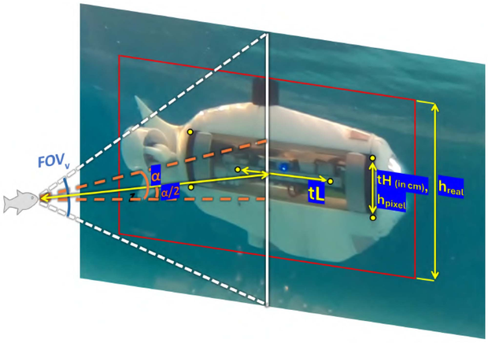
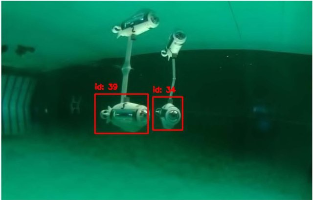
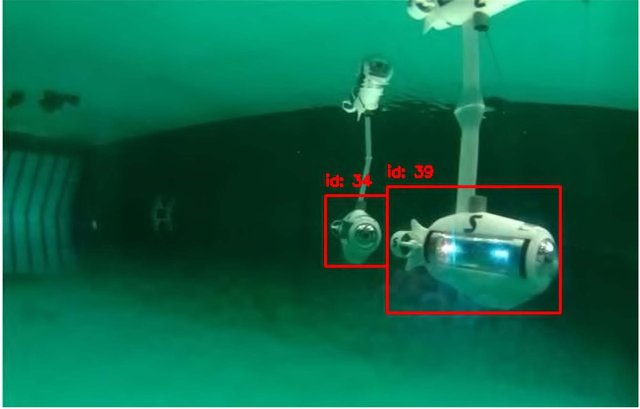
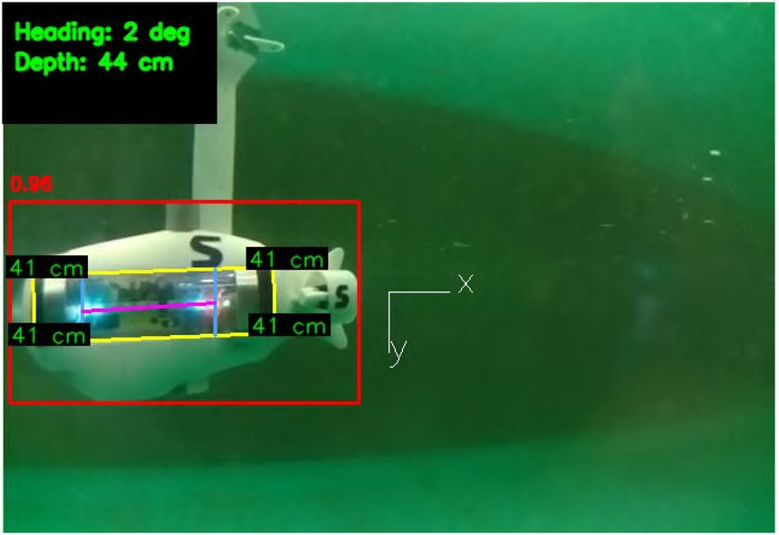
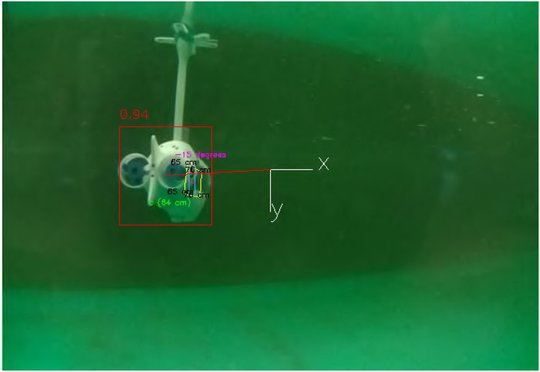
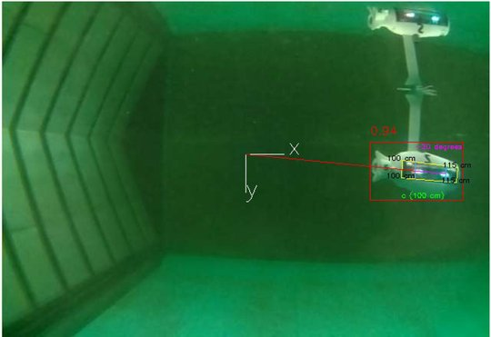

An H-SURF robotic fish uses a single onboard camera to track its neighbours and estimate their relative depth and heading. Pool experiments compare those estimates with motion capture.
Technical summary
Narrated summary · 5:41. Captions are included in the video.
Estimating a neighbour’s position with one camera
Each H-SURF robotic fish carries a monocular camera and a Raspberry Pi 4. The pipeline detects and tracks neighbouring agents and estimates body keypoints. A closed-form geometric model converts the keypoints into relative depth and heading without GPS or acoustic communication.
Estimates are validated in a pool against OptiTrack motion capture, and the models are converted and quantized for onboard execution.

Tracking speed on a Raspberry Pi 4, by model format
Frames per second, YOLOv5n + ByteTrack. Higher is faster.
Tracking and localization
Multi-object tracking of H-SURF agents


Relative localization: success and failure cases



Cite this paper
@article{eltobgui2026swarms,
title = {Underwater Robotic Swarms: Lightweight Visual Tracking and Relative Localization Approach},
author = {ElTobgui, Rim and Iacoponi, Saverio and Renda, Federico and De Masi, Giulia and Dias, Jorge},
journal = {IEEE Journal of Oceanic Engineering},
year = {2026},
doi = {10.1109/JOE.2026.3678798}
}